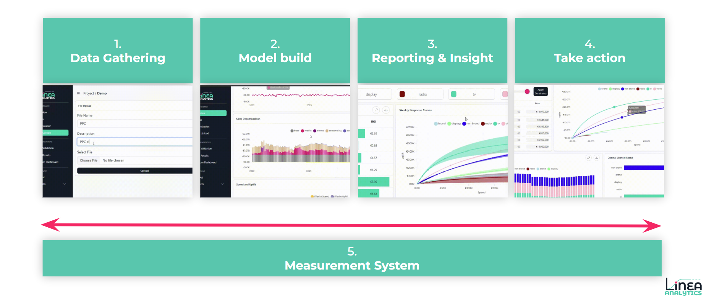
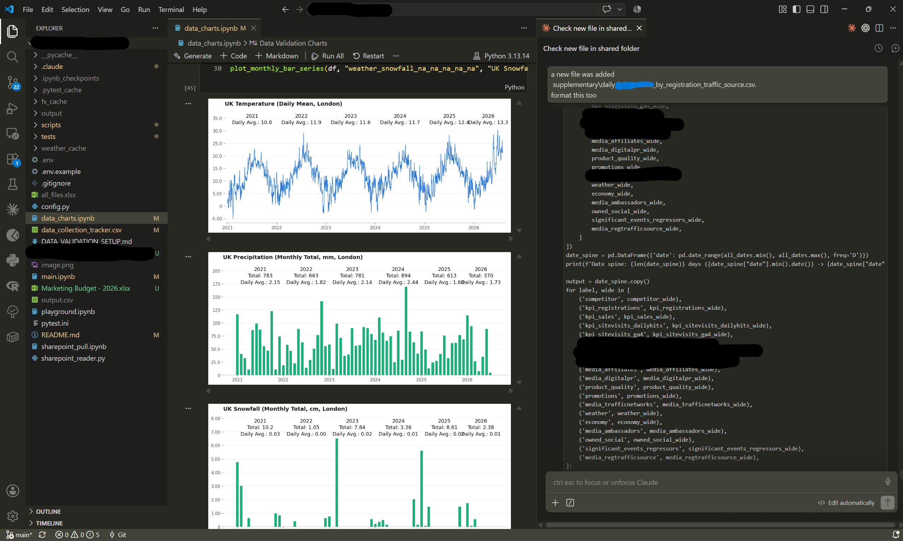
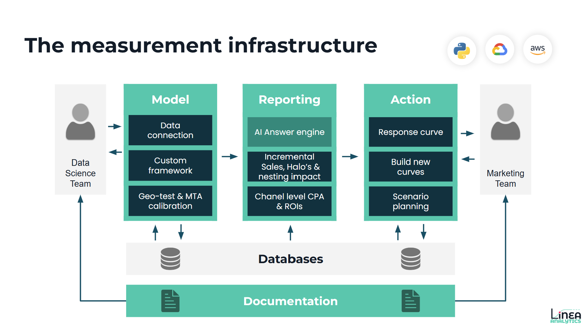

AI Marketing Mix Modelling: Where it Belongs and Doesn’t
We’ve been told to use AI for everything, haven’t we? From automated creative generation to self-optimising media buys, the promise of LLM’s is everywhere in adtech. But when it comes to measuring true incrementality, applying AI blindly is a recipe for big mistakes.
So, here is my breakdown of how we are using LLMs at Linea for building Marketing Mix Modelling. Where you should, and explicitly should not, be leveraging AI to build your marketing mix modelling framework.
Phases of Modern MMM
To understand where AI adds value, let’s first break down the core components of a typical marketing mix model set up we will then deep dive into how to build AI into each phase
- Data Gathering & Transformation
- Model Build
- Reporting & Insight
- Take Action & Stakeholder Engagement
- The Measurement System

1. Data Gathering & Transformation: The Big AI Winner
If there is a clear win for AI and automation in modern measurement, it’s in data engineering.
Historically, data ingestion took up >50% of an MMM project’s lifespan. Data science teams spent months cleaning messy CSVs, reconciling disparate data, and aligning weekly or daily tracking.
A combination of Automation and AI tools drastically compress this processing time. By building automated data connectors, marketing teams can continuously pull from multiple media platforms, DSPs, and internal data warehouses. AI transformation scripts can reformat non-standard inputs, flag missing data, and verify data accuracy instantly.
This is also the perfect use case. You talk to any data expert and this is the bit they have always wanted to skip! AI handles the heavy lifting of ingestion and anomaly detection leaving data teams to focus on validation & interpretation as the final step. At Linea, this step is what makes always-on MMM possible, moving measurement from an annual post-mortem to a continuous measurement cycle.

2. Model Build: Not quite ready
It’s tempting to hand the entire modeling phase over to an autonomous AI agent. However, while AI-driven model generation is fast, its comparison to real-world statistical accuracy is, at best, mixed.
In our experience, even after spending 12 months training and fine-tuning AI modeling engines, purely automated model building requires significant human intervention. To some extent that is understandable given the complexities you expect across different business models. Here are some of the watchouts:
- Endogenous Variables: AI struggles to identify when a variable is both driving and being driven by business outcomes (such as brand search volume or performance retargeting spend). That’s the simple explanation of the fancy word.
- Over-Correlation: High mathematical correlation does not equal causation. An unguided AI model will happily attribute sales growth to a random campaign simply because both happened to spike during peak seasonality.
- Peculiar Media Variables: Without domain expertise, automated systems can produce negative return curves or illogical channel interactions.
While AI MMM packages might offer a foundation, running them on "autopilot" without expert oversight often leads to misinterpretation and untrusted outputs. Accurate model building that actually drives change does still require strict guardrails & human validation.
3. Reporting & Insight: Transforming Data into Intelligence
Once your model build is mathematically sound, AI becomes an invaluable asset for reporting and insight generation.
The secret to unlocking AI in reporting is standardising your underlying data infrastructure. When your metrics, channel taxonomies, and results follow a structured pattern, you can safely overlay automated interpretation models.
This is where advanced reporting platforms like the Linea AI Measurement Engine become important. Instead of forcing brand managers to manually review outputs, an AI-driven insight layer can instantly detect trend deviations, highlight diminishing returns of channels, and surface subtle shifts in media efficiency as soon as fresh results arrive.
4. Take Action & Stakeholder Engagement: Don’t Skimp Here
Data and dashboards don't make strategic decisions: people do.
When it comes to stakeholder management, budget reallocation, and executive alignment, do not skimp on human expertise. CMOs, CFOs, and growth leads rarely make major multi-million-pound decisions on your media budget based purely on a dashboard. They want consultative support, context, and trust in the approach.
AI provides an interactive layer and answers questions quicker. But experienced human advisors bridge the gap between data science and commercial strategy. Understanding the true meaning behind business questions and not just answering the question at hand is the difference to ensure that stakeholders fully trust and act on the results.
5. The AI Measurement System: The Connective Glue
Your AI set up shouldn't just be a bit built in each of the layers of MMM. You also need to have a connective system that unifies every stage of the pipeline. That’s why using an open source model is only solving part of the problem. It allows you to build a model but not run the end to end of an MMM project.
At Linea we have built this connective layer to drive faster updates. Our integrated AI layer acts as an automated project manager, to:
- Flag incoming data inconsistencies before they corrupt the model.
- Alert model builders when issues arise - such as a channel's return curve deviating from historical norms.
- Ensures that the data warehouse, modelling infrastructure and reporting suite directly feed each other
Only with this step does each stage of the MMM process talk to each other.

The Bottom Line for Modern Brands
AI has transformed marketing mix modelling. For brands of all sizes, this shift delivers two huge advantages:
- Cost-Efficient Measurement: The days of paying £1m annually for slow, black-box, retroactive MMM consultancies are over. That’s why we started Linea!
- Bringing MMM to brands of all sizes: No longer is accurate marketing measurement reserved for large enterprises, it is now accessible to high-growth brands of all sizes.
While AI provides unprecedented speed and data automation, it won’t solve all of your measurement problems. The primary barrier to a successful Marketing Mix Model has always been its ability to drive real-world change in media planning, budget allocation, creative execution, and overarching strategy. To drive this transformation still requires experienced measurement professionals driving action alongside brand leadership.
But automating data engineering, enforcing rigorous human oversight on model builds, and deploying AI engines for rapid scenario planning, allows us to deliver faster, more transparent, and actionable marketing measurement that brands can truly trust.